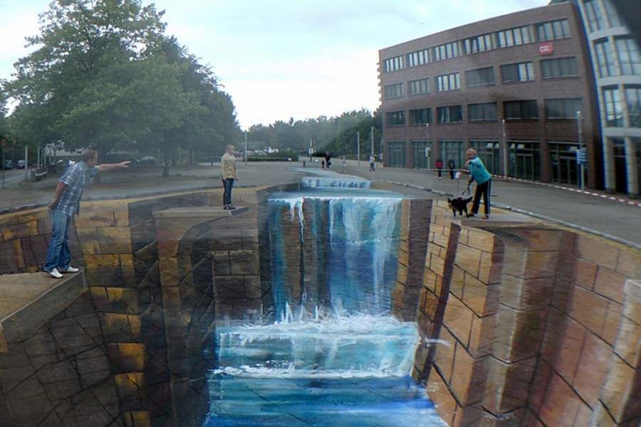

Compiti per casa
Da studiare
Argomenti svolti finora:
-
1) Formula risolutiva
-
2) Numero di soluzioni
-
3) Schema di risoluzione
-
4) Casi particolari
-
4.1) Se \(b = 0\)
-
4.2) Se \(c = 0\)
-
5) Equazioni risolvibili tramite la legge di annullamento del prodotto
-
6) Scomposizione di polinomi di secondo grado
-
7) Polinomi di secondo grado e parabola
-
8) Disequazioni di secondo grado
QUA trovate il materiale da ripassare.
Questa è una simulazione del compito in classe. Provate a svolgerla alle stesse condizioni del compito in classe:
-
un'ora a disposizione;
-
foglio di bella scritto in maniera comprensibile;
-
niente cellulare;
-
calcolatrice scientifica alla mano;
-
le soluzioni vedetele dopo aver finito di svolgere la simulazione.
Esercizio 1
Risolvere la seguente equazione
\[
\left(3x - 1\right)^2 -\left(x +2\right)\left(-x\right) = 1 - \left(-x^2 +5x +1\right) -4x
\]
Soluzione:
L'equazione non ha soluzioni.
Esercizio 2
Scomporre il seguente polinomio
\[
15x^2 -11x -14
\]
Soluzione:
\[
\begin{align*}
15x^2 -11x -14 = & \,\,15 \cdot \left(x -\dfrac{7}{5}\right) \cdot \left(x + \dfrac{2}{3}\right)
\\\\
= & \,\, \left(5x -7\right) \cdot \left(3x +2\right)
\end{align*}
\]
Esercizio 3
Studiare il segno del seguente polinomio al variare del valore della \(x\):
\[
-5x^2 -2x +11
\]
Soluzione
-
\(-5x^2 -2x +11 \gt 0 \quad\text{se}\quad \dfrac{-1 -2\sqrt{14}}{5} \lt x \lt \dfrac{-1 +2\sqrt{14}}{5}\)
-
\(-5x^2 -2x +11 = 0 \quad\text{se}\quad x = \dfrac{-1 -2\sqrt{14}}{5} \quad\text{oppure}\quad x = \dfrac{-1 +2\sqrt{14}}{5}\)
-
\(-5x^2 -2x +11 \lt 0 \quad\text{se}\quad x \lt \dfrac{-1 -2\sqrt{14}}{5} \quad\text{oppure}\quad x \gt \dfrac{-1 +2\sqrt{14}}{5}\)
Esercizio 4
Risolvere la seguente equazione
\[
\left(3x +5\right) \cdot \left(3x -6\right) \cdot \left(-2x + 18\right) = 0
\]
Soluzione
\[
x = -\dfrac{5}{3} \quad\text{oppure}\quad x = 2 \quad\text{oppure}\quad x = 9
\]
Esercizio extra
Stabilire per quali valori del parametro \(b\) la seguente equazione ha due soluzioni distinte:
\[
x^2 + bx + b+1 = 0
\]
Soluzione
\(b \lt 2 - \sqrt{2} \quad \text{oppure} \quad b \gt 2 + \sqrt{2}\)
Extra
L' anamoforsi è una tecnica artistica che sfrutta la prospettiva per creare illusioni ottiche.
Di seguito alcuni esempi:

Un dipinto simile lo trovare sulle scalinate del mercato Trionfale a via Andrea Doria (vicini alla metro Cipro della linea A).